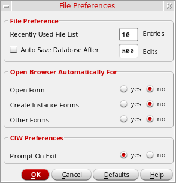

Setting the Library Browser Form To Open Automatically
To set the Library Browser form to open automatically from specific forms, follow these steps:
-
From the CIW, choose Options – File Preferences.
The File Preferences form appears. -
In the Open Browser Automatically For group box, select yes for the forms from which you want the Library Browser form to open automatically.
You can select any or all form types. - Click OK.
The next time you open any of the selected types of forms, the Library Browser form appears automatically.You do not have to restart the software for your preferences to take effect.
Related Topics
Return to top